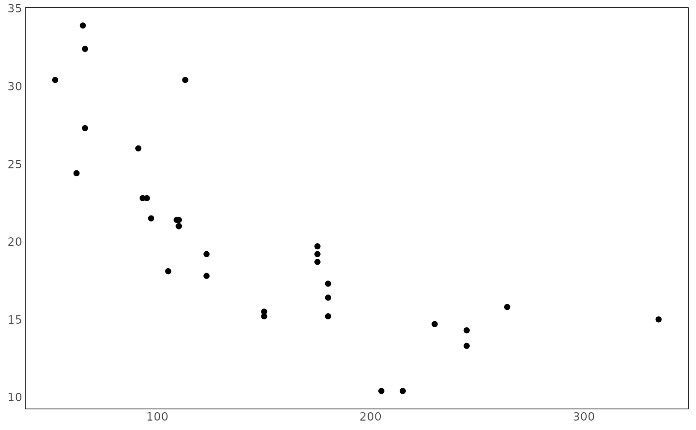

A theme for plotting PRIO-GRID data
Arguments
- legend.position
Legend position accepted by
ggplot2::theme().
Examples
ggplot2::ggplot(mtcars, ggplot2::aes(x = hp, y = mpg)) +
ggplot2::geom_point() +
pg_theme()

A theme for plotting PRIO-GRID data
Legend position accepted by ggplot2::theme().
ggplot2::ggplot(mtcars, ggplot2::aes(x = hp, y = mpg)) +
ggplot2::geom_point() +
pg_theme()
